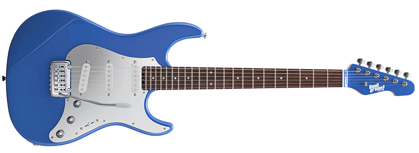
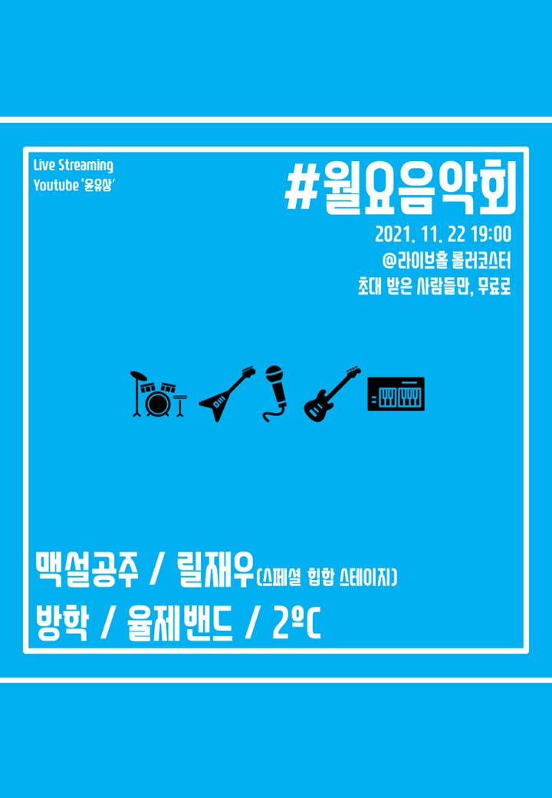

~ Monthly ~
2021.01
2021.02
2021.03
- [joined band] joined 어우러진(Eoureojin)
- [joined band] joined 맥설공주(MacSurlGongjoo) - Korean Band 맥거핀(MacGuffin) & 설(SURL) cover band.
- [gear bought] bought 7th guitar. - ESP Snapper Tae

2021.04
- [ended military service!!!]
- [youtube upload] Orangette - 코토바(cotoba) cover video uploaded.
- [gear sold] sold 7th guitar. - ESP Snapper Tae
2021.05
- [joined band] joined 2ºC(2 docci) - Korean Band 쏜애플(THORNAPPLE) cover band.
2021.06
2021.07
- [youtube uploaded] 六月は雨上がりの街を書く - ヨルシカ(Yorushika) cover video uploaded.
2021.08
- [quitted band] quitted 어우러진(Eoureojin).
2021.09
2021.10
2021.11
- [live performance] 월요음악회 - 2ºC(2 docci), 맥설공주(MacSurlGongjoo)

click to watch
- 살아있는 너의 밤 - 쏜애플(THORNAPPLE)
- 물가의 라이온 - 쏜애플(THORNAPPLE)
- 한낮 - 쏜애플(THORNAPPLE)
- 석류의 맛 - 쏜애플(THORNAPPLE)
- 서울 - 쏜애플(THORNAPPLE)
- HOKKAIDO - 맥거핀(MacGuffin)
- BUCKET LIST - 맥거핀(MacGuffin)
- ABDUVIDA - 맥거핀(MacGuffin)
- 옥상에서 춤을 - 설(SURL)
- 9지하철 - 설(SURL)
- [youtube uploaded] Loss - 코토바(cotoba) cover video uploaded.
2021.12
~ Songs Practiced ~
- 사랑하긴 했었나요 스쳐가는 인연이었나요 우리 함께했던 시간들이 자꾸 내 마음을 가둬두네 - 잔나비
- Fine - 태연
- From Mark - 하동균
- 너만의 나 - Behindthemoon
- 그대에게 - 무한궤도
- 와리가리 - 혁오
- 샛노랑과 새빨강 사이 - 가을방학
- 롤린 - 브레이브걸스
- 살아있는 너의 밤 - 쏜애플(THORNAPPLE)
- 물가의 라이온 - 쏜애플(THORNAPPLE)
- 한낮 - 쏜애플(THORNAPPLE)
- 석류의 맛 - 쏜애플(THORNAPPLE)
- 서울 - 쏜애플(THORNAPPLE)
- 은하 - 쏜애플(THORNAPPLE)
- HOKKAIDO - 맥거핀(MacGuffin)
- BUCKET LIST - 맥거핀(MacGuffin)
- ABDUVIDA - 맥거핀(MacGuffin)
- DISCO - 맥거핀(MacGuffin)
- 옥상에서 춤을 - 설(SURL)
- 9지하철 - 설(SURL)
- Orangette - 코토바(cotoba)
- Loss - 코토바(cotoba)
- 六月は雨上がりの街を書く - ヨルシカ(Yorushika)